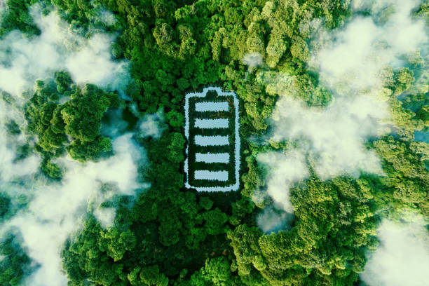

Análisis del Ciclo de Vida de un Producto Tecnológico
El Análisis del Ciclo de Vida (ACV) es una metodología que evalúa los impactos ambientales asociados a un producto a lo largo de todas las etapas de su existencia, desde la adquisición de materias primas hasta su disposición final. Este análisis es fundamental para comprender y mitigar la huella ambiental de los productos tecnológicos.
1. Adquisición de Materias Primas
La producción de productos tecnológicos requiere una variedad de materiales, incluyendo metales, plásticos, cerámicas y otros compuestos. La extracción y el procesamiento de estas materias primas pueden tener impactos ambientales significativos, tales como:
- Agotamiento de recursos naturales
- Destrucción de hábitats
- Contaminación del suelo y el agua
- Emisiones de gases de efecto invernadero
2. Fabricación
La fase de fabricación implica la transformación de las materias primas en componentes y el ensamblaje del producto final. Este proceso puede incluir:
- Consumo intensivo de energía
- Uso de sustancias químicas peligrosas
- Generación de residuos
- Emisiones al aire y al agua
3. Distribución y Transporte
El transporte de materias primas, componentes y productos terminados a través de la cadena de suministro contribuye a las emisiones de gases de efecto invernadero y al consumo de energía. Consideraciones importantes incluyen:
- Distancia de transporte
- Modo de transporte (barco, camión, avión)
- Eficiencia del embalaje
4. Uso
La etapa de uso del producto tecnológico implica el consumo de energía durante su funcionamiento. El impacto ambiental en esta fase depende de:
- Eficiencia energética del dispositivo
- Fuentes de energía utilizadas (renovables vs. no renovables)
- Duración de la vida útil del producto
5. Fin de Vida
La gestión del fin de vida de los productos tecnológicos es un desafío importante debido a la presencia de materiales valiosos y sustancias peligrosas. Las opciones de fin de vida incluyen:
- Reutilización
- Reciclaje
- Recuperación de energía
- Disposición en vertederos
Impacto Ambiental General
El ACV de los productos tecnológicos revela una serie de impactos ambientales significativos en todas las etapas, que incluyen:
- Cambio climático
- Agotamiento de recursos
- Contaminación del aire, agua y suelo
- Generación de residuos
- Impacto en la biodiversidad
Estrategias para la Sostenibilidad
Para mejorar la sostenibilidad de los productos tecnológicos, se pueden implementar diversas estrategias:
- Diseño para el Medio Ambiente (DfE): Diseñar productos que sean duraderos, reparables, reciclables y energéticamente eficientes.
- Economía Circular: Adoptar modelos de negocio que fomenten la reutilización, el reciclaje y la recuperación de materiales.
- Responsabilidad Extendida del Productor (REP): Hacer que los fabricantes sean responsables del fin de vida de sus productos.
- Innovación en Materiales: Investigar y utilizar materiales más sostenibles y menos tóxicos.
- Eficiencia Energética: Mejorar la eficiencia energética de los dispositivos y promover el uso de energías renovables.
Conclusión
El análisis del ciclo de vida es una herramienta esencial para evaluar y mejorar la sostenibilidad de los productos tecnológicos. Al considerar todas las etapas del ciclo de vida, es posible identificar oportunidades para reducir el impacto ambiental y avanzar hacia un futuro más sostenible.